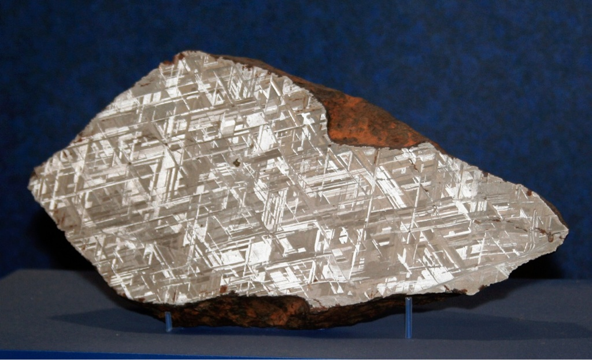
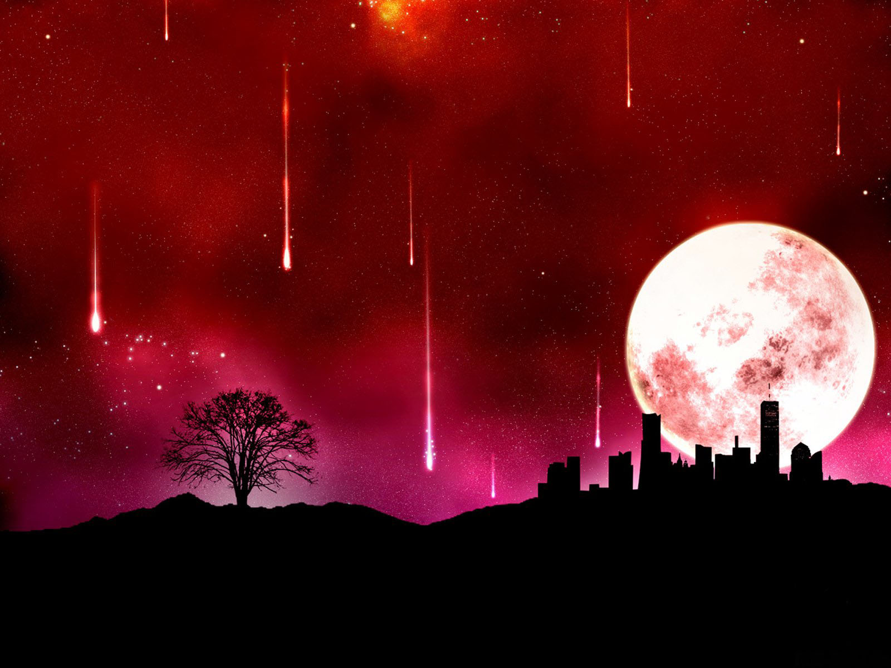

<div class="container">
    <div class="row">
      <div class="col-xs-12 col-md-6">
        <div>
          <h2>Touch the cosmos by tracking meteorites.</h2>
          <figure class="figure">
          
          <figcaption class="figure-caption text-center">Widmanstätten pattern from sliced Seymchan meteorite.</figcaption>
          </figure>
          <p>
           The demand for meteorites is quite high all over the world! Many have called them the “truest form of black gold,” and they often sell for $300.00 per gram or more - meaning a 1 pound meteorite can be worth a million dollars.</p>
           <button class="btn btn-primary" ui-sref="fireball.reports">view recent fireballs</button>
        </div>
      </div>
      <div class="col-xs-12 col-md-6">
        <div>
          <h2>Did you observe a fireball?</h2>
          <figure class="figure">
          
          <figcaption class="figure-caption text-center">artist rendition of meteorite shower</figcaption>
          </figure>
          <p>
           These larger meteors provide most distinctive sights known as fireballs or bolides. Because of their size these take many seconds (up to about ten) to burn out as they pass across the sky, seemingly very slowly and in a horizontal mode. They look like a ball with a fiery tail and are usually orange or blue/green in colour.</p>

           <button class="btn btn-primary btn-large" ui-sref="fireball.newFireball">Report new fireball</button>
        </div>
      </div>
    </div>
  </div>
